Certificate of Completion
This certifies that
RAJSHREE
has successfully designed, built, and launched FocusFlow — an AI-powered task prioritization and daily planning application — completing the full software development lifecycle from requirements through a production-ready release, as the capstone project of the AB Talks 60-Day Claude AI Challenge.
Built with Claude (free tier) as AI pair-programmer and project mentor throughout the sprint.